En este manual vamos a ver como se visualizan los libros en la plataforma digital, así como el procedimiento de publicación.
Para poder logarse en el CAT es necesario disponer de:


Como ya indicamos en manuales anteriores, siempre se debe updatear el proyecto en el CAT antes de realizar cualquier operación:
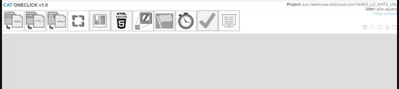Identificamos y pulsamos el botón de acceso de la herramienta:
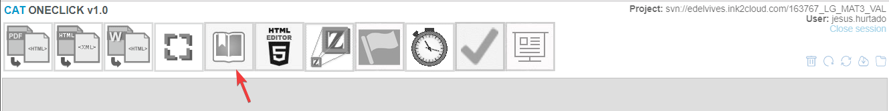Esperamos hasta que todo el proceso haya finalizado (desaparecerá el mensaje amarillo de la esquina superior derecha):
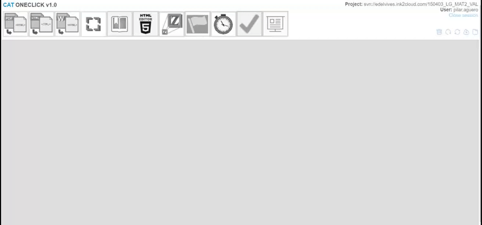Esta pantalla ofrece mucha información del libro que estamos utilizando, sin embargo, no es objeto de este manual de uso.
Desde esta herramienta, se pueden realizar diversas acciones, por lo que vamos a explicar cada una de las más habituales para los editores de forma independiente.
En la parte central de la pantalla, observamos el botón azul “GO TO READER”
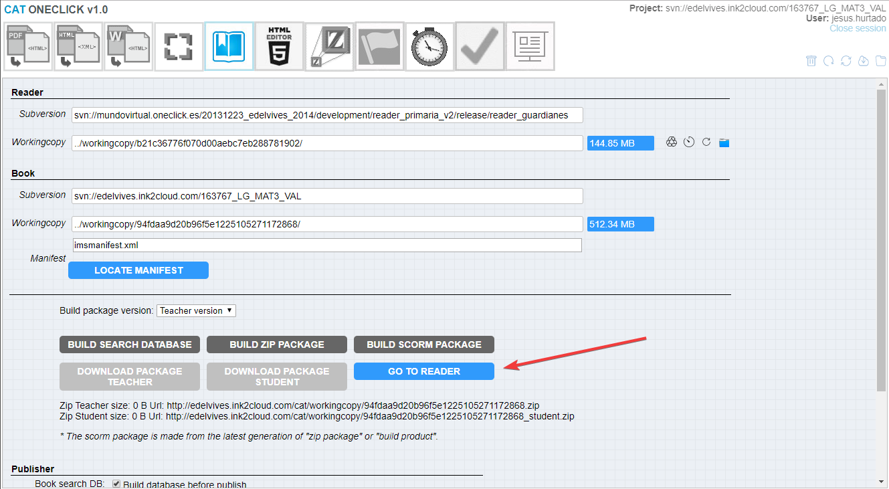Este botón, nos permite acceder a la visión del libro en el que estamos trabajando tal y como se mostraría en la plataforma digital, por tanto, será una acción imprescindible para cualquier editor, puesto que debe ir comprobando el resultado final del trabajo que está realizando.
Una vez pulsado, se nos abrirá una pestaña nueva en el mismo navegador en la que se muestra todo el contenido digital que se haya editado hasta ese momento:
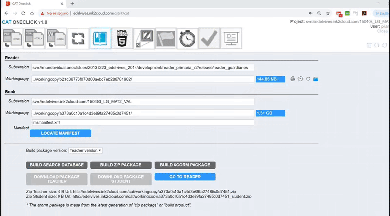La navegación por el libro digital dependerá del proyecto en el que nos encontremos, ya que no todos muestran el mismo aspecto. Adjunto algunos ejemplos diferentes:
 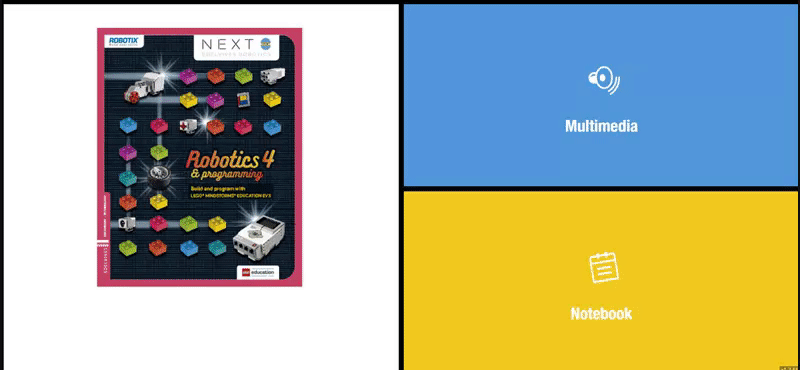
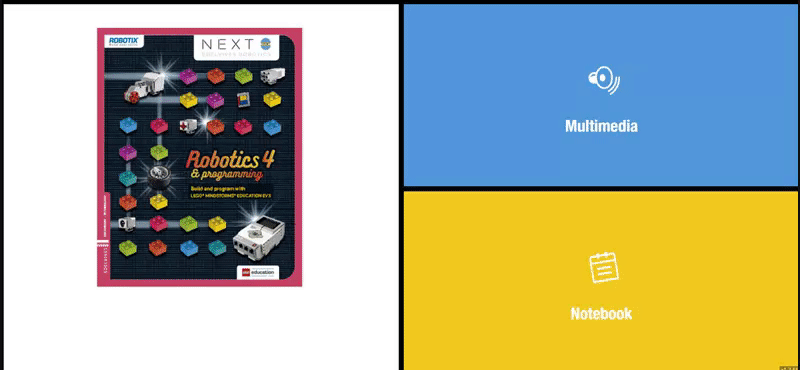
La nueva pestaña que nos ha abierto la opción GO TO READER, tiene una dirección url que muestra la versión existente en el preciso instante que se genera denominada workingcopy (en adelante wc)
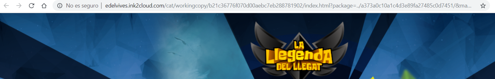Esta url, siempre mostrará la misma versión, aunque se siga trabajando en el proyecto y se implementen cambios. Para mostrar los nuevos cambios deberá generarse una nueva url mediante la opción GO TO READER.
Para mostrar una versión a alguien que no tenga acceso al cat, puede proporcionársele la url de su wc, sin embargo, necesitará también las claves de acceso que se introducen al acceder al cat (usuario y contraseña)

En la parte final de la pantalla del reader aparece el apartado de publicación “Publisher”
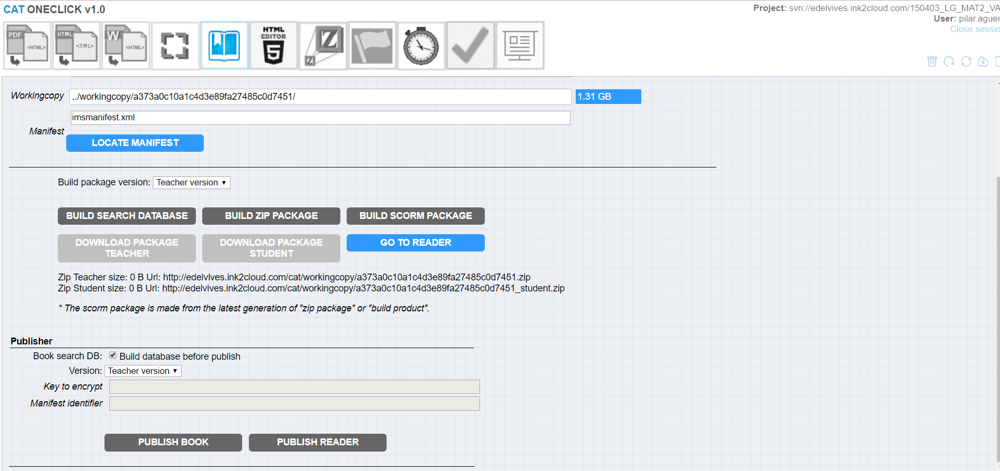Como podemos observar, existen 2 botones diferentes: PUBLISH BOOK y PUBLISH READER
Como su nombre indica:
Tal y como ya hemos visto en los ejemplos anteriores de navegación, los libros digitales se muestran de diferente manera en los diversos proyectos. Esto se debe, a que utilizan diferentes readers o “motores de lectura”.
Hasta que no se publica (ya sea libro o reader), el contenido y/o aspecto no es visible para los usuarios finales, tan solo será visible para el personal que tenga acceso al cat y pueda generar el libro mediante la opción GO TO READER descrita en el párrafo anterior.
La opción Publish Reader, actualiza los cambios de programación que hayan realizado los desarroyadores sobre el “motor de lectura”.
Tal y como veíamos en el punto anterior, al publicar se actualiza la versión (en este caso de programación), a la existente en ese preciso instante. Esta actualización, afectará a todas las wc de los todos libros que utilicen este reader, por tanto, este botón sólo debe ser utilizado por los programadores, o en su defecto, sólo pulsarlo por indicación de ellos.
La mayoría de los libros que ya han sido publicados, se autopublican diariamente mediante un CRON, por tanto, una publicación no autorizada del reader, podría afectar a infinidad de libros que están siendo utilizados por usuarios finales y dar lugar a multitud de incidencias a nuestros clientes.
Una vez pulsado el botón, la herramienta nos indicará que ha teminado el processo y mostrará el número de veces que ha sido publicado de forma manual:
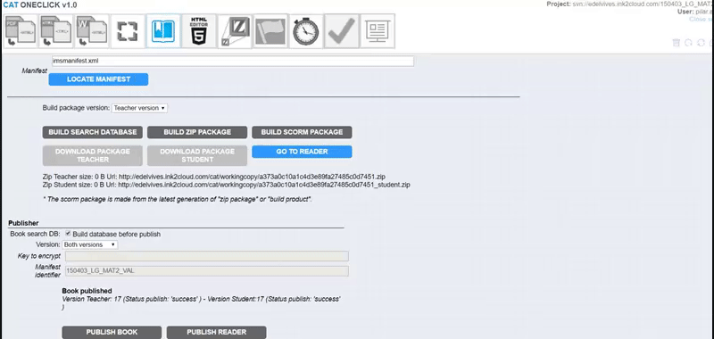La opción Publish Book, actualiza los cambios de contenido que hayan realizado los editores sobre el libro concreto que estemos trabajando.
Tal y como veíamos en el punto anterior, al publicar se actualiza la versión (en este caso de contenido + última versión del reader que se haya publicado), a la existente en ese preciso instante. Esta actualización, generará la wc y será esta versión, la que se muestre a los usuarios finales.
Por todo lo expuesto, este botón sólo debe ser utilizado por indicación directa de editorial, ya que podríamos mostrar versiones a los usuarios finales aún no autorizadas por nuestro cliente.
En el caso de esta opción, y dependiendo del proyecto en el que nos encontremos, podremos encontrar diferentes opciones posibles de publicación:
La opción a elegir, nos vendrá indicada por editorial.
Una vez pulsado el botón, la herramienta nos indicará que ha teminado el processo y mostrará el número de veces que ha sido publicado de forma manual:
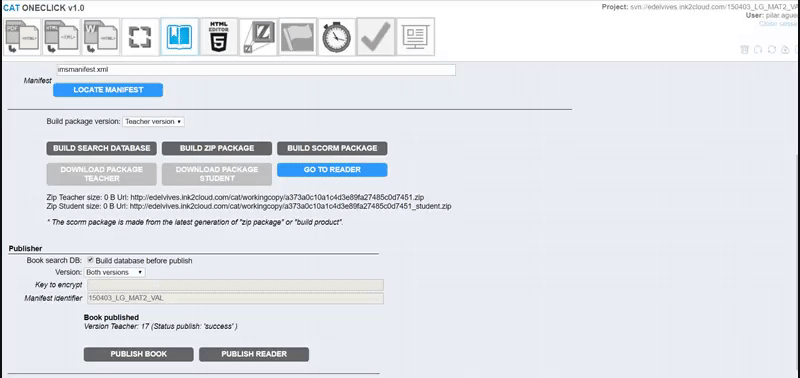